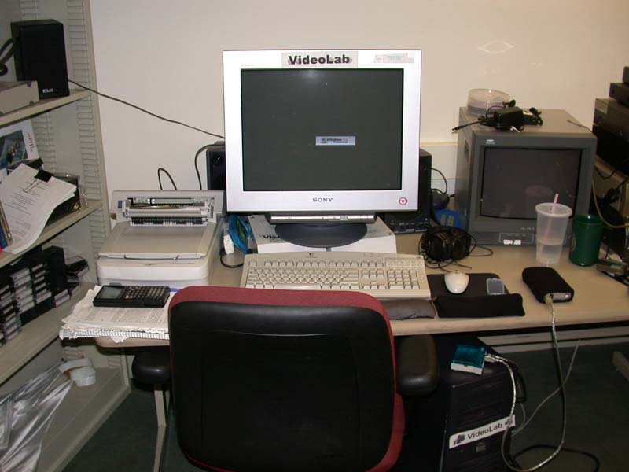

This is a picture of my desk at school. Everyday when I go to school, I sit at my desk and work on my computer, Videolab. All of you have used a computer in the past, but you may not know what all of the pieces of the computer are called or what they are used for. This website will walk through the different pieces of Videolab, starting with the ones you can see in this picture and ending by looking inside the main box, or case, of the computer. To move forward through the website, click on the red arrow pointing right on the top of the screen. To move back, click on the red arrow pointing left. You are now ready to explore Videolab. So, continue on to the next page by clicking the red arrow pointing right.